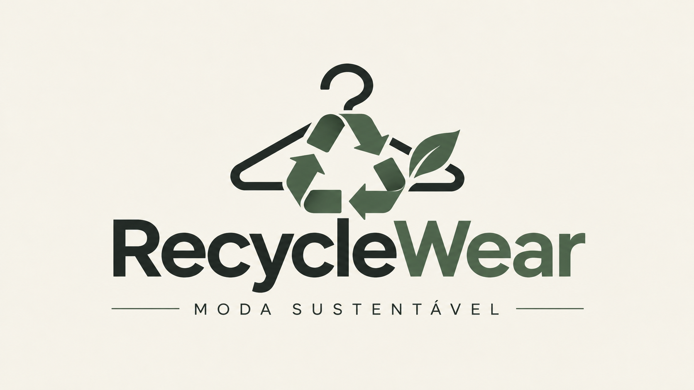

RecycleWear — moda sustentável
Carregando coleção...
Explore a coleção 01 — 03
Carregando coleção...
Explore a coleção 01 — 03

ROUPA COM OUTRA HISTÓRIA
A RecycleWear transforma materiais reaproveitados em peças para o dia a dia. Estilo e consciência podem andar juntos.
Descubra a coleção ↗